Exercícios
E 4.1.1. Resolva o seguinte sistema de equações lineares
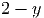
Usando eliminação gaussiana com pivotamento parcial (não use o computador
para resolver essa questão).
Resposta. Escrevemos o sistema na forma matricial e resolvemos:
Portanto 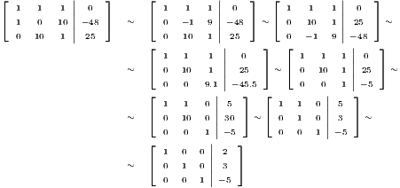
, ,
E 4.1.2. Resolva o seguinte sistema de equações lineares
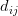
Usando eliminação gaussiana com pivotamento parcial (não use o computador
para resolver essa questão).
E 4.1.3. Calcule a inversa da matriz
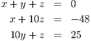 usando eliminação Gaussiana com pivotamento parcial.
E 4.1.4. Demonstre que se 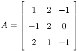, então a matriz dada por:
é inversível e sua inversa é dada por:
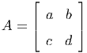
E 4.1.5. Considere as matrizes

e
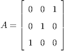 e o vetor
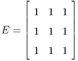
- Resolva o sistema 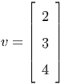 sem usar o computador.
- Sem usar o computador e através da técnica algébrica de sua
preferência, resolva o sistema 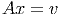 considerando 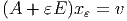
e obtenha a solução exata em função do parâmetro .
- Usando a expressão analítica obtida acima, calcule o limite 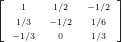.
- Resolva o sistema 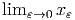 no Scilab usando pivotamento
parcial e depois sem usar pivotamento parcial para valores muito
pequenos de 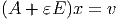 como 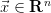. O que você observa?
Resposta.
- 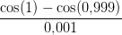
- O sistema é equivalente a
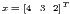 Somando as três equações temos
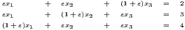 Subtraímos 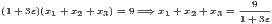 da cada equação do sistema original e temos:
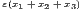 Assim temos:
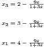
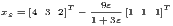
E 4.1.6. Resolva o seguinte sistema de  equações lineares
equações lineares
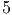
representando-o como um problema do tipo 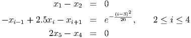 no
Scilab e usando o
comando de contra-barra para resolvê-lo. Repita usando a rotina que implementa
eliminação gaussiana.
E 4.1.7. Encontre a inversa da matriz
- Usando Eliminação Gaussiana com pivotamento parcial à mão.
- Usando a rotina ’gausspp()’.
- Usando a rotina ’inv()’ do Scilab.
![[ 1 1 1 | 0 ] [ 1 1 1| 0 ] [ 1 1 1 | 0 ]
1 0 10 |−48 ∼ 0 −1 9|−48 ∼ 0 10 1 |25 ∼
0 10 1 25 0 10 1 25 0 − 1 9 −48
[ 1 1 1 | 0 ] [ 1 1 1| 0 ]
∼ 0 10 1 | 25 ∼ 0 10 1|25 ∼
0 0 9.1 −45.5 0 0 1 −5
[ 1 1 0 |5 ] [ 1 1 0 |5 ]
∼ 0 10 0 |30 ∼ 0 1 0 |3 ∼
0 0 1| −5 0 0 1 −5
[ 1 0 0| 2 ]
∼ 0 1 0| 3
0 0 1 −5](main1970x.png)